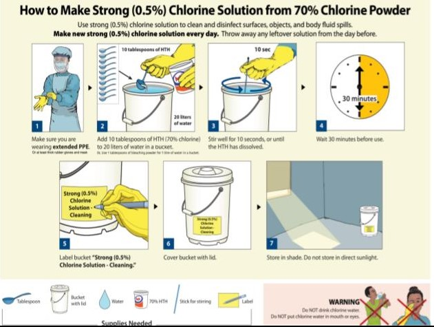

COVID 19
কাশি শিষ্টাচার মেনে চলুন
· মুখ ঢেকে হাঁচি কাশি দিন
· হাঁচি কাশির সময় টিস্যু পেপার/ মেডিকেল মাস্ক/ কাপড়ের মাস্ক/রুমাল/ বাহুর ভাঁজে মুখ ও নাক ঢেকে রাখুন এবং উপরের নিয়মানুযায়ী হাত পরিষ্কার করুন।
· টিস্যু পেপার ও মেডিকেল মাস্ক ব্যবহারের পর ঢাকনাযুক্ত ময়লা ফেলার পাত্রে (পাত্র পরিষ্কারের নিয়ম নিচে দেখুন) ফেলুন। কাপড় বা রুমাল ব্যবহার করলে হাঁচি/কাশি দেবার পর সাথে সাথেই সাবান পানি দিয়ে ধুয়ে
ভালোভাবে শুকিয়ে ব্যবহার করুন।
জরুরী প্রয়োজন ব্যতিত ভ্রমণ পরিহার করুন
· জরুরী প্রয়োজন ছাড়া ভিড় এড়িয়ে চলুন বা জনসমাগম হয় এমন স্থানে যাওয়া থেকে বিরত থাকুন।
· জরুরী প্রয়োজন ছাড়া বিদেশ ভ্রমণে বিরত থাকুন বা প্রবাসীগণ দেশে আসা থেকে থেকে বিরত থাকুন।
1.মাস্ক কখন ব্যবহার করবেনঃ
2.মাস্ক কিভাবে ব্যবহার করবেনঃ
ঢাকনাযুক্ত আবর্জনার পাত্রে ব্যবহৃত টিস্যু/মাস্ক ফেলার জন্য আলাদা পলিথিন ব্যাগ ব্যাবহার করুন এবং ব্যাগটি গিট দিয়ে আটকে রাখুন। পাত্র পূর্ণ হয়ে গেলে আবর্জনা সহ পলিথিন ব্যাগটি উন্মুক্ত স্থানে না ফেলে পুড়িয়ে ফেলুন
(হাসপাতালের ক্ষেত্রে ইনসিনারেশন এর ব্যবস্থা থাকলে সেটি ব্যবহার করুন) এবনং পাত্রটি নিম্নের চিত্রবিবরণী অনুসারে পরিষ্কার করুনঃ
